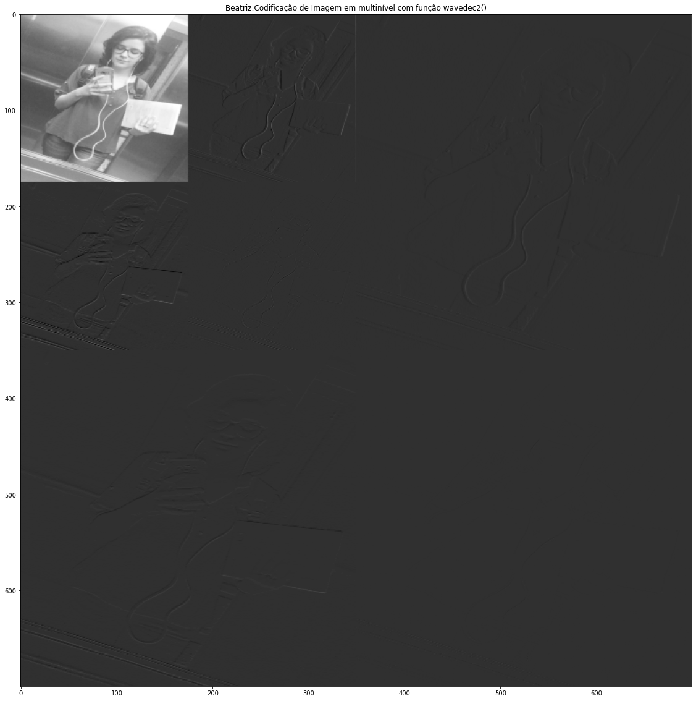
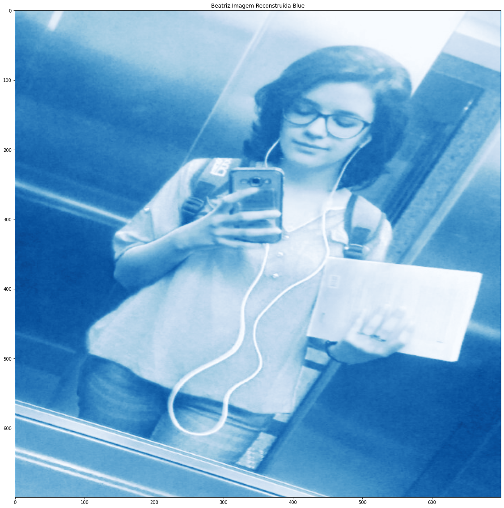
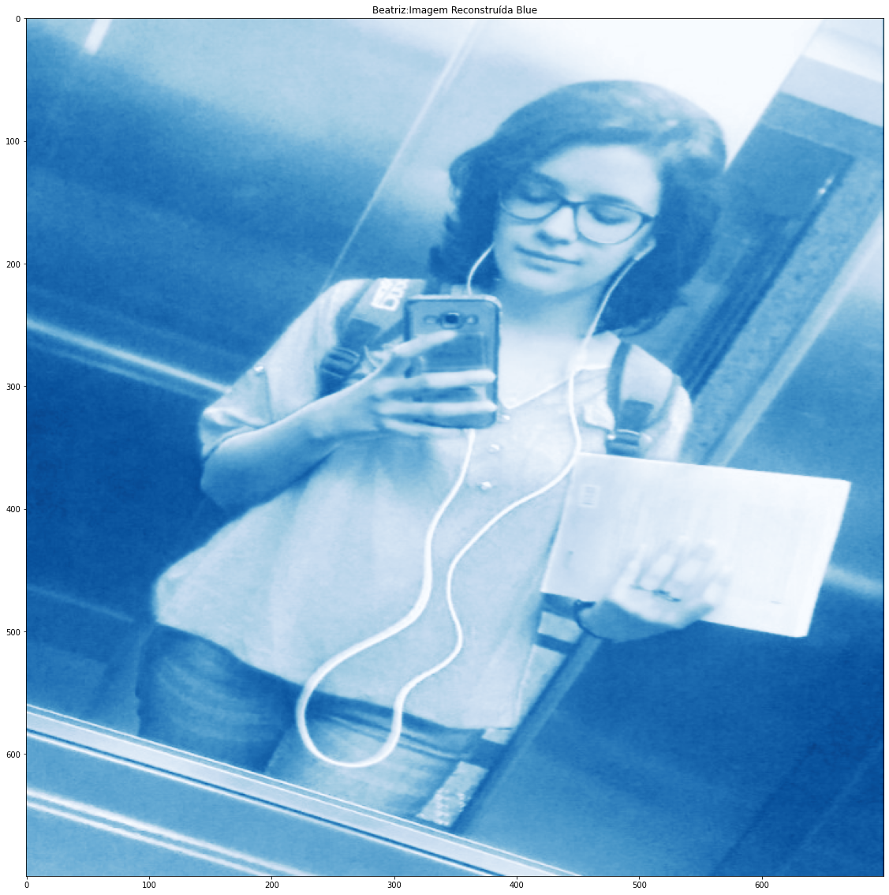
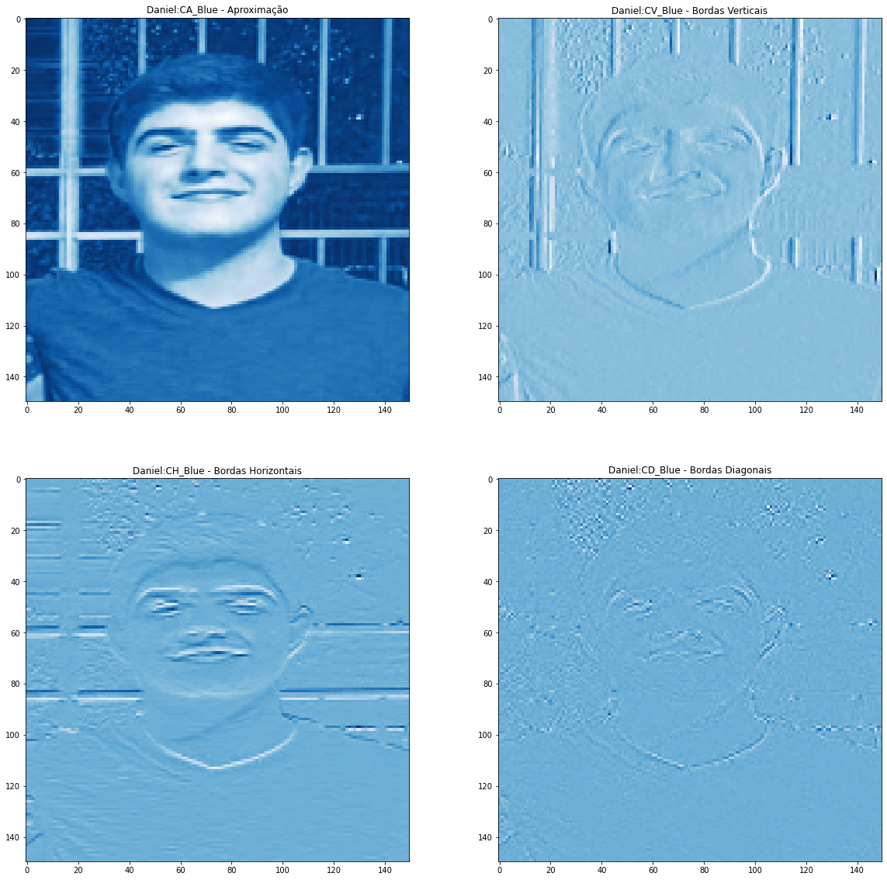
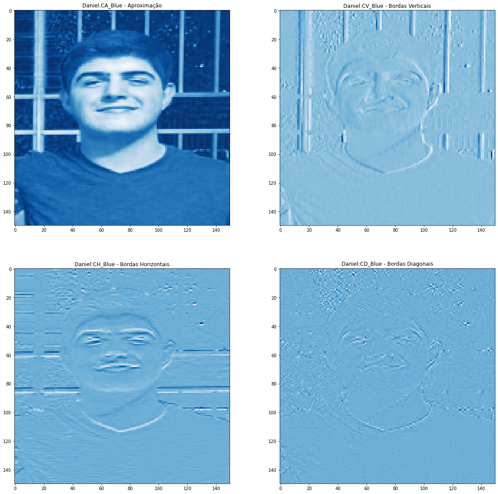
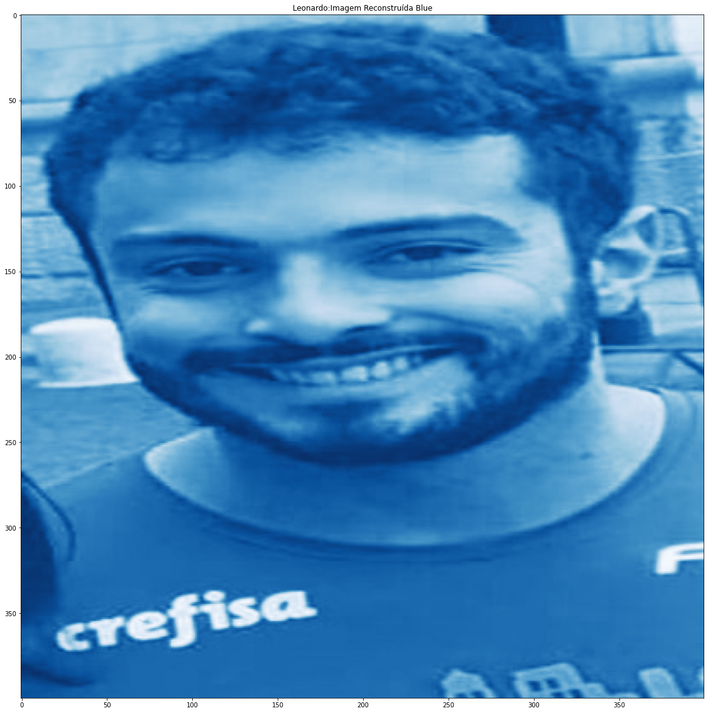
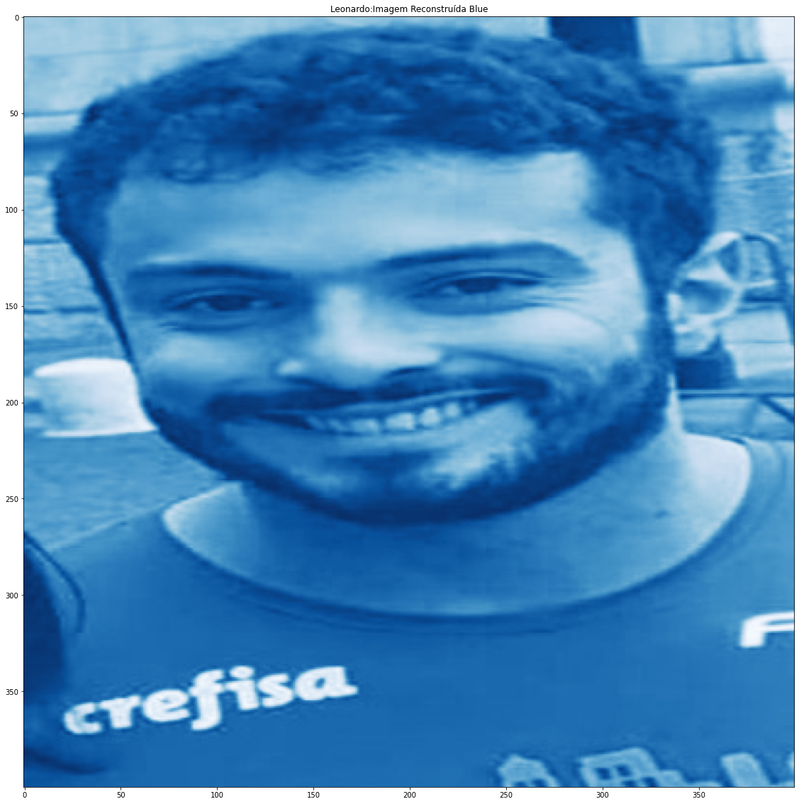
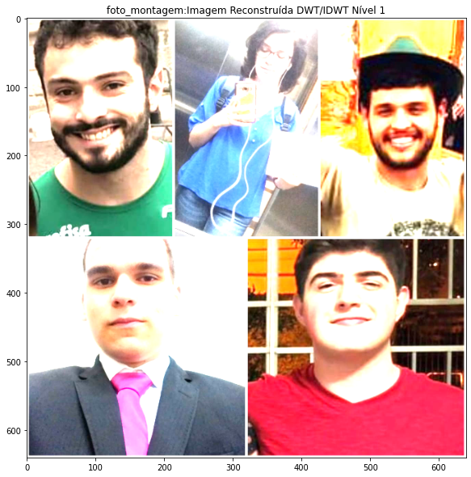
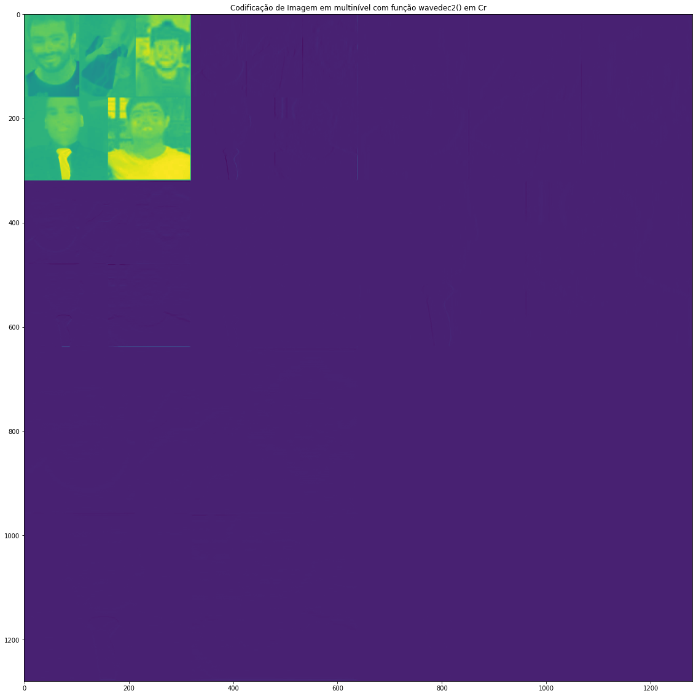
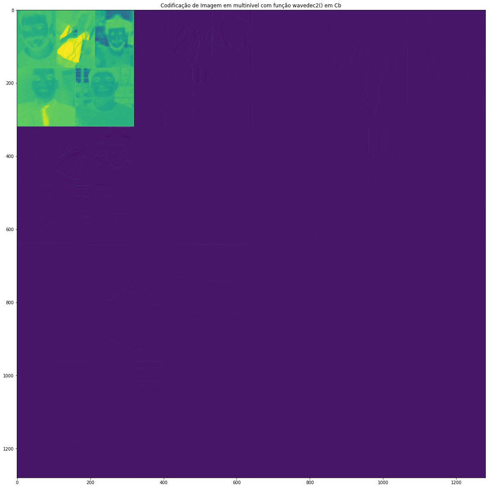

Codificação de Imagens com DWT
Objetivos:
- Efetuar a Codicação de Imagem e a Decodicação por DWT e IDWT;
- Testar funções de Codicação Multinível;
- Vericar a taxa de compressão só com a Componente de Aproximação;
Codificação de Luminância (P&B) com DWT para as fotos dos integrantes do grupo e da foto montagem
Resolução da foto em P&B com DWT de cada integrante do grupo, bem como da foto-montagem:
- Resolução para Beatriz: 700 x 700 PIXELS.
- Resolução para Daniel: 300 x 300 PIXELS.
- Resolução para Felipe: 1200 x 1200 PIXELS.
- Resolução para Leonardo: 400 x 400 PIXELS.
- Resolução para Rodrigo: 200 x 200 PIXELS.
- Resolução para Foto do Grupo: 1280 x 1280 PIXELS.


Cálculo do Erro Quadrático Médio (MSE) e da Relação Sinal Ruído de Pico (PSNR) para as fotos dos integrantes do grupo e da foto montagem:
- Beatriz: MSE_Y = 6.92e-13, PSNR_Luma = 169.73 dB
- Daniel: MSE_Y = 1.14e-13, PSNR_Luma = 177.55 dB
- Felipe: MSE_Y = 1.36e-12, PSNR_Luma = 166.79 dB
- Leonardo: MSE_Y = 2.31e-13, PSNR_Luma = 174.49 dB
- Rodrigo: MSE_Y = 2.29e-13, PSNR_Luma = 174.53 dB
- Foto do Grupo: MSE_Y = 1.03e-12, PSNR_Luma = 167.99 dB


Teste das Funções de Multiresolução wavedec2() e waverec2() para as fotos dos integrantes do grupo e para a foto montagem:


Efetuar uma "Montagem" com wavedec2() e wavedecn() das fotos dos integrantes do grupo e da foto montagem:



Reconstrução das imagens em R,G,B e em cores para as fotos dos integrantes do grupo e para a foto montagem:

 


 



 



Reconstrução de nível 1 colorida para as fotos dos integrantes e para a foto montagem:

Reconstrução da imagem colorida e cálculo da MSE de cada plano de cor e da PSNR total para as fotos dos intergantes e para a foto montagem:
- Beatriz: MSE_R = 6.95e-13, MSE_G = 6.90e-13, MSE_B = 8.12e-13, PSNR_total = 164.71 dB
- Daniel: MSE_R = 3.53e-13, MSE_G = 7.39e-14, MSE_B = 5.46e-14, PSNR_total = 171.31 dB
- Felipe: MSE_R = 1.49e-12, MSE_G = 1.34e-12, MSE_B = 1.31e-12, PSNR_total = 161.96 dB
- Leonardo: MSE_R = 2.66e-13, MSE_G = 2.27e-13, MSE_B = 1.63e-13, PSNR_total = 169.96 dB
- Rodrigo: MSE_R = 3.28e-13, MSE_G = 1.99e-13, MSE_B = 1.01e-13, PSNR_total = 170.15 dB
- Foto do Grupo: MSE_R = 1.48e-12, MSE_G = 9.96e-13, MSE_B = 8.57e-13, PSNR_total = 162.90 dB
Foto montagem do grupo enas componentes Y, Cr e Cb, além de RGB:
Codificação YCrCb com DWT para a foto montagem do grupo:

Cálculo do Erro Quadrático Médio (MSE) e da Relação Sinal Ruído de Pico (PSNR):
- MSE_Cr = 9.47e-13
- PSNR_Cr = 168.37 dB
- MSE_Cb = 7.03e-13
- PSNR_Cb = 169.66 dB
- Text(0.5, 1.0, 'Imagem Reconstruída Cb com PSNR = 169 dB')
Teste das Funções de Multiresolução wavedec2() e waverec2():

Efetuar uma "Montagem" com wavedec2() e wavedecn():
 
Reconstrução de Imagem Colorida (YCrCb):
Reconstrução da Imagem colorida e Cálculo da MSE de cada plano de cor e da PSNR total: